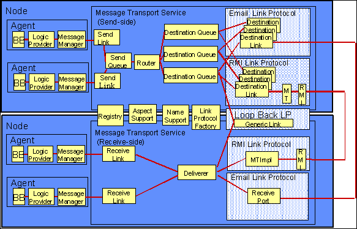
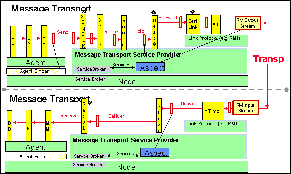

Message Transport Service
Overview
The Cougaar Message Transport Service (MTS) is an adaptive Node-level service that handles all inter-Agent communication in a Cougaar society. It is componentized and includes adaptive features that can be selected at run-time. Adaptive features from the Ultra*log program include: adaptivity to different threat level of society (BBN), dependability (OBJS), security (NAI), performance (BBN QUO) and agent-mobility (BBN).
The MTS is organized in classical Object Oriented Programming (OOP) fashion around a collection of classes that define the structural components, augmented with a simple implementation of Aspect Oriented Programming (AOP) that facilitates crosscutting among the structural objects. Together, the OOP and AOP components provide a simple, robust core that's very easy to adapt and extend. Both the OOP and AOP components are described below. MTS code was refactored, out of the core, to allow ease of use and understanding for developers. A description of this refactoring follows.
MTS Refactoring
The Message Transport Service remains as service, and as such should be organized as any other service. To this effect, MTS was refactored in 11.0 into its own module, with its own corresponding jar, for ease of developer understanding and use, and more easily facilitates other pluggable messaging options. The logic of the refactor focused on separation of base MTS implementation from Aspect code, used by outside developers. What was necessary to core remained, including the basic MessageTransportService interface. The rest was refactored into two corresponding packages:
org.cougaar.mts.base
- Aspect-oriented implementation of minimal MTS including stations, data structures and standard Link Protocols
- Offers all the hooks for aspects to add adaptivity
- Should export NO services at the Node layer, except MessageTransportService
org.cougaar.mts.std
- Contains extensions, aspects local services and their required data structures
- May export Node-level service
MTS Structural Components
The core of the MTS is implemented using classical OOP techniques. The classes are described in more detail in this section. The intention of the overall MTS design is that the core structural components will remain as is, without addition (except for new Link Protocols) or modification (except for bug fixes). Rather than modifying the core to add new behaviors or modify existing ones, those additions and changes will be implemented as Aspects, described in more detail below.
The backbone of the MTS consists of a series of interfaces that define the flow of a message from the source Agent to the destination Agent, and a collection of Link Protocols that handle the various kinds of message delivery (e.g. local, remote-via-RMI, remote-via-CORBA, email). The flow interfaces are known as stations, since messages pass through them in a well-defined order. The stations and their implementation and factory classes, along with the Link Protocols and a few key utility classes, constitute the structural core of the MTS.
Message Stations
The basic stations are described below (Figure 3-8) and also depicted in the "top view" diagram.

Figure 3-8: Componentization of Message Transport (“top view”). This figure diagrammatically enumerates all the Message Stations.
When a message is sent from the sending Agent to the receiving Agent, it flows through a predefined series of stations, described below in the "side view" of the Services (see Figure 3-9). A message flows from the sending Agent through a per-Agent Send Link, associated with the Agent's Message Transport Service Proxy, into a shared Send Queue. The act of dropping the message in the Send Queue terminates the invoking call. The Send Queue's dedicated thread then passes the each message to the Router, which picks a Destination Queue for that message. Each Destination Queue has its own thread and is responsible for delivering messages to the corresponding receiving Agent, even if that Agents isn't active at the time. The Destination Queues select the "best" LinkProtocol for each message and hand it off to a DestinationLink created by the LinkProtocol. The Destination Link then moves the message to the MessageDeliverer on the destination Node, using the given protocol (eg RMI, email, nttp, loopback, CORBA, or raw sockets). The MessageDeliverer finds the corresponding ReceiveLink for the message, which in turn hands the message off to the destination Agent. If the receiving Agent is no longer local, the MessageDeliverer will throw an exception back to the DestinationQueue in the sending Node

Figure 3-9: The “side view” shows the flow of messages through the stations.
MessageTransportService
This interface specifies the Service itself, as seen by the Agent. The implementation class is MessageTransportServiceProxy, exactly one of which is created for each Agent which requests the MessageTransportService. The MessageTransportServiceProvider makes MessageTransportServiceProxy instances on demand. The implementation class does very little work itself. Most of the work is handled by a SendLinkImpl, which is created for the MessageTransportServiceProxy by the MessageTransportServiceProvider.
SendLink
This is the first functional MTS station. The SendLink handles client registration, decides whether or not a given message can be sent, and in most circumstances starts the message on its way by placing it on the SendQueue. In ordinary message traffic, the calling thread of a message-send operation returns once the SendLink has placed the message on the SendQueue. SendLinkImpl, one of which is made for each MessageTransportServiceProxy by the MessageTransportServiceProvider, implements SendLink.
SendQueue
The SendQueue has two purposes: it keeps messages in order, and it prevents the calling thread of the sending Agent from blocking. As such the queue itself is simply a holding place for messages. SendQueueImpl, instances of which are created by the SendQueueFactory, implements the SendQueue interface. In the current design, SendQueueFactory is ServiceProvider for the SendQueue service. SendQueueImpl is a sublcass of MessageQueue and as such has an associated thread. In this case the thread pulls Messages off the queue and forwards them to the Router.
Router
The Router has the job of sorting Messages by target (destination) and passing them to the corresponding DestinationQueue for that target. It uses the DestinationQueueProviderService, which will find or make at most one DestinationQueue for any given target. RouterImpl, instances of which are created by the RouterFactory, implements the Router interface. In the current design, RouterFactory is a ServiceProvider for the Router service.
DestinationQueue
The DestinationQueues have the job of selecting the "best" LinkProtocol for any given message, and delivering the message, in the correct order, to a DestinationLink provided by that LinkProtocol. The selection itself is handled indirectly, via the LinkSelectionPolicy (see below). DestinationQueueImpl, instances of which are created by the DestinationQueueFactory, implements the DestinationQueue interface. One DestinationQueueImpl is made for each referenced destination MessageAddress by the DestinationQueueProviderService. DestinationQueueImpl is a subclass of MessageQueue and as such has an associated thread. In this case the thread pulls Messages off the queue and attempts to dispatch them to a DestinationLink, which can deliver them. For any given Message these attempts will continue until the Message is successfully delivered.
DestinationLink
DestinationLinks do the protocol-specific work of getting the message from the sender's Node to the receiver's Node. The DestinationLink implementation classes are specific to their corresponding LinkProtocol and are typically defined as inner classes of the protocol classes. See the LinkProtocol section for more details.
MessageDeliverer
The MessageDeliverer has the job of finding the right ReceiveLink for each Message, and passing the Message off to that link once it's been found. MessageDeliverer is an MTS-level service, provided by the MessageDelivererFactory and implemented in the current design by a singleton MessageDelivererImpl instance.
ReceiveLink
ReceiveLinks simply accept Messages from the MessageDeliverer and hands them off to the ultimate recipient. ReceiveLinkImpl, instances of which are created by the ReceiveLinkFactory, implements the ReceiveLink interface. The MessageTransportRegistryService makes requests for instantiation on demand via the ReceiveLinkProviderService.
Link Protocols
As the side-view diagram (Figure 3-9) makes clear, message flow is divided into two parts, send and receive, with the linkage between the two left unspecified. There are a number of ways in which this linkage might be handled: it could be direct (for local messages), it could use an RMI or CORBA call, it could use email or news, it could use sockets, etc. The MTS implements these various kinds of linkages as instantiable subclasses of the abstract class LinkProtocol. These instantiable subclasses have full responsibility for getting a Message from the sender's Node to the receiver's Node. Some of these Link Protocols are part of the Cougaar 'core' module, some are from other modules supported by BBN, and some are from other developers. The BBN-supported Link Protocols are described here. Defining new LinkProtocol classes is one of two primary hooks through which the MTS can be extended (aspects are the other).
Link Protocols are connected to the message flow by the DestinationLink station. DestinationLinks can be thought of as destination-specific front ends to Link Protocols and are ordinarily defined as inner classes of LinkProtocol classes. The protocol itself is responsible for the real work of moving Messages, and also acts as the "factory" for its DestinationLinks.
LinkProtocol instances are Components of the MTS and have access to all MTS Services, as well as Node-level Services. They are also Service Providers and may define protocol-specific services in the MTS Service Broker.
LoopbackLinkProtocol
This protocol handles intra-Node traffic. It's effectively a direct call from the DestinationLink to the MessageDeliverer.
RMILinkProtocol
This protocol provides the default implementation for handling inter-Node traffic, by using RMI calls to remote objects of type MT (implemented by MTImpl). The structure of RMILinkProtocol is general enough to support other forms of remote method invocation. Subclasses need only provide alternate implementations of one or more of a small set of protected methods. Three examples follow.
SSLRMILinkProtocol
This subclass of RMILinkProtocol uses ssl encryption for the RMI communication by overriding RMILinkProtocol's getSocketFactory method.
SerializedRMILinkProtocol
This subclass of RMILinkProtocol pre-serializes Message into byte arrays by overriding RMILinkProtocol's doForwarding method. It defines a new kind of MTImpl, which will handle the deserialization on the server side, and creates these new server objects by overriding RMILinkProtocol's make MTImpl method.
CorbaLinkProtocol
This subclass of RMILinkProtocol sends Messages via CORBA instead of RMI. This class is in Ultralog Robustness UC#3 , and is in the java package org.cougaar.robustness.dos.quo.
The LinkProtocolFactory creates the LinkProtocol instances when the MTS starts up. By default, it will create a LoopbackLinkProtocol and an RMILinkProtocol. If the org.cougaar.message.protocol.classes system property is defined, the LinkProtocolFactory will create instances of the listed classes instead of the default classes.
Link Selection Policy
When more than one LinkProtocol is defined, the DestinationQueues need to pick one for each queued Message. The LinkSelectionPolicy, a service created by the MessageTransportServiceProvider, handles the job of selecting the best protocol for any given message. The default implementation class for this interface is MinCostLinkSelectionPolicy. A different class can be specified with the org.cougaar.message.transport.policy system property. LinkSelectionPolicy is an MTS-level service.
The MinCostLinkSelectionPolicy does what its name implies: it selects the cheapest DestinationLink. The DestinationLinks, in turn, compute a cost by asking their enclosing LinkProtocol class.
Naming and Registration
Two forms of name registration are managed by the MTS. One, the MessageTransportRegistryService, handles local Agent registration by keeping a map from Agent addresses to the Agent's ReceiveLink representation. This simple map is used in the final step of Message delivery. The NameSupport Service represents the second naming class in the MTS. NameSupport provides a high-level front-end to the basic Cougaar naming services (eg WhitePages). NameSupport and MessageTransportRegistryService are available as Services to all MTS Components.
Aspects
The principles of Aspect Oriented Programming (AOP) provide a perfect mechanism for extending and adapting the basic structure of the MTS, since the nature of such extensions is generally a cut across two or more structural components. In order to facilitate this use of AOP without depending on third-party code generators, the MTS includes a simple, limited implementation directly in Java that uses aspect instances to provide delegates for the various station interfaces. This implementation centers on classes, which implement the interface MessageTransportAspect, in particular, subclasses of StandardAspect. All the aspects described below are sublcasses of StandardAspect. Aspects are Cougaar Components and are loaded in the usual way. Some Aspects are also created explicitly in code.
The application of aspects to station and other instances is handled by the AspectSupport Service, available to all MTS Components. The order of aspects is important and will always follow the Component loading order. The explicitly created aspects always come before the aspects loaded as Components.
The application of aspects follows a simple pattern, using the MessageTransportAspect method getDelegate. After any "aspectizable" instance is created, whether by a factory or by any other means, each aspect in turn is given an opportunity to provide a delegate for that instance. The delegate, which will of course match the same interface as the original instance, will then take the place of the original instance or the previous delegate in the application of aspects. The final result is a nested series of objects matching the original interface whose innermost object is the original instance. The earlier an aspect appears in the global list of all aspects, the closer any delegate it provides will be to the raw instance for which the delegates are being provided.
One extra complication has arisen in the use of aspects. In some cases, proper nesting of send code with matching receive code requires that the order of aspects be reversed in the latter. In order to handle this, aspects are actually given two chances to provide delegates: once in the original aspect order, then again in the reversed order. The first opportunity is getAspect, described above. The second is getReverseAspect. In the second case, later aspect delegates will be closer the raw instance.
The following interfaces support aspects, in the sense that instances of these interfaces will always have aspect delegates attached immediately after instantiation: DestinationLink, DestinationQueue, MessageDeliverer, NameSupport, Router, SendLink, SendQueue. In addition, the RMILinkProtocol provides two other places in which aspects can be attached: the RMI server object; and the client-side stub for remote MT objects. These two present a problem for the getDelegate and getReverseDelegate calls, since in both cases the relevant delegate interface is MT.class. In order to distinguish these two, we use MTImpl.class in the getDelegate and getReverseDelegate calls on for the RMI server object, even though the delegates themselves need only match the interface MT. Finally, aspect delegates may be attached indirectly to serialization streams, which has the effect of converting a direct tcp connection into a series of Filter Streams (see org.cougaar.core.mts.MessageWriter and org.cougaar.core.mts.MessageReader).
Since most aspect delegates only want to provide a few methods of the given interface, rather than a complete reimplementation, we provide trivial delegating implementations for each of the station interfaces. In all cases, the names have the form {interface} DelegateImplBase. The aspect delegate classes should extend these and only have to provide the methods that are relevant to that aspect.
Here is a partial list of aspects in the Core MTS. The following figure depicts a few aspects and where they get attached to the message stations.

Figure 3-10: Message Transport Aspects Cross Cut Multiple Stations
AgentFlowAspect
Collects message information for use in building a Traffic Matrix.
AgentStatusAspect
Collects Agent State information.
DeliveryVerificationAspect
Logs warnings if a message has been pending for too long.(default is 10 seconds)
MessageProtectionAspect
Provides an example of adding trailers to serialized AttributedMessages. Stores a message attribute reflecting the validity of the message bytecount.
MessageSendTimeAspect
Tags all messages with a "send time" attribute when they enter the MTS SendLink.
MessageTimeoutAspect
Aspect to throw out a timed out message. Necessary for MsgLog et. al. Checks every thread in MTS for timed out attributes on a message: SendLink, Router, DestinationLink, ReceiveLink
MessageTraceAspect
Debugging and testing Aspect - logs a successful or failed message entry per stage of the MTS. This entry contains useful information about the message as well as time deltas between stages. Use BBN Adaptive Robustness's csmart/rules/debug_rules/messageTrace.rule. Or, simply configure the society configuration to include the MessageSendTimeAspect, MessageProtectionAspect, and the MessageTraceAspect along with this argument:
-Dorg.cougaar.core.logging.log4j.appender.MessageTrace.File = #{cip}/workspace/log4jlogs/#{node.name}.trace
RMISocketControlAspect
This aspect adds simple statistics gathering to the client side OutputStream of RMI connections.
WatcherAspect
Implements the message watching functionality by attaching delegates to SendQueue and MessageDeliverer objects.
MulticastAspect
Multicast in the MTS is handled by this aspect.
FlushAspect
Handles the call to flush forcing all pending message either to be delivered or dropped. The flush functionality isused in Agent mobility
ForwardMessageLoggingAspect
Logs interesting fields of received messages, in tab-separated format; used for debugging Link Protocols
SecurityAspect
Provides a simple form of message-level security by enabling message signing. This is more of an example than a functional aspect.
SerializationAspect
Forces the LoopbackLinkProtocol to serialize all messages; used to debug serialization error.
StatisticsAspect
Collects message transport statistics. This is used by the metric services PSP.
TraceAspect
Logs data about messages as they move through the message transport stations. This is used for debugging the message transport.
ScrambleAspect
Scrambles a message sequence; used to debug message transport.
SequenceAspect
Ensures that messages are delivered in right sequence.
StubDumperAspect
Displays information about LinkProtocol addresses; used to debug LinkProtocols.
StepperAspect
Provides a gui for "single-stepping" the sending of messages.
ChecksumStreamsAspect
An example of using FilterStreams in RMI. This particular example adds a checksum to the end of the message. Adding trailers onto message serialization could also be used to sign a message.
CompressingStreamsAspect
Another example of using FilterStreams in RMI. This example compresses and decompresses message data on the fly.
MTS Use of the Thread Service
All Java Threads used within the MTS are allocated and maintained by a locally defined ThreadService, a child of the Node-level ThreadService. All MTS components should get all threads through the Thread Service.
The MTS makes use of 11.0's "Thread Lanes" Thread Service implementation by providing 4 context switches:
- SendLink - Agent assigned a thread
- Send Queue - Best Effort
- Destination Queue - Blocks on IO
- ReceiveLink - Receives the LinkProtocol's thread -[RMI has its own, which Cougaar does not control]
MTS Use of the Cougaar Component Model
As can be seen from the descriptions, the MTS makes heavy use of the Cougaar Component Model. The two forms of dynamic extensions, Aspects and LinkProtocols, are loaded as Components. In addition, many of the internal objects are defined as Components and use locally defined Services to communicate with one another.
AOP is Not a Magic Bullet
By combining OOP and AOP, a simple and easily maintainable core design for message transport can be easily extended, either to provide new sorts of behavior altogether (e.g., new ,) or to adapt existing behavior in smart and dynamic ways (e.g. new Aspects), without compromising the simplicity of the core design. This is a significant win in every way. But the use of AOP in the MTS design is not a magic bullet: it won't eliminate every design problem that might ever arise, even if it greatly reduces the overall complexity.
In particular, considerable care is required when combining Aspects in previously untested ways. Aspects should usually be orthogonal to one another, and most of the current Aspects are. But even in this case, Aspect order can be very important. The user of a given set of Aspects needs to understand them well enough to choose a reasonable order at runtime.
When Aspects are not orthogonal, the interactions will of course become even trickier to handle properly (though not remotely as complicated as managing the same interactions would be in a monolithic design). In such situations, the lack of orthogonality needs to be examined very closly, since it may simply be an artifact of confused Aspect design. Non-orthogonal Aspects should be quite unusual, and as such can reasonably be expected to require special-case handling.
Configuring MTS at Run Time
Loading Aspects
Aspects should be loaded as a components using the insertion point
Node.AgentManager.Agent.MessagTransport.Aspect
Loading Link Protocols
LinkProtocols should be loaded as components using the insertion point"
Node.AgentManager.Agent.MessagTransport.Component
If no LinkProtocol components are specified, RMI and Loopback will be loaded as defaults.
Single-Node MTS
A single-node MTS implementation was created for performance characterization and MTS overhead computation, which resides in org.cougaar.core.mts.singlenode. It is a very lightweight version of the MTS whereby a single node is run without the overhead of costly services (naming,wp,etc.) It provides the developer with an easy stripped testcase for performance characterization.
Configuring a Single-Node MTS at Runtime
All that is required to run a Single-Node MTS society is to specify one machine with one or multiple agents, one node, and an argument sepcifying the desired Single-Node MTS implementation:
-Dorg.cougaar.core.mts.singlenode=true